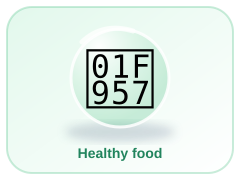
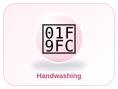
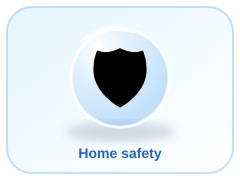

🥗
Food & Nutrition
Learn about balanced meals, food groups, clean water and safe food handling.
Remember: Wash hands before preparing or eating food. Eat a variety of fruits and vegetables.
Learn useful everyday skills for a healthy, safe and caring home.



Explore food and nutrition, hygiene, home safety, caring for clothes, saving resources and helping your family. Ask a trusted adult before trying an activity.
This page is a learning activity, not a substitute for adult supervision.
Learn about balanced meals, food groups, clean water and safe food handling.
Discover handwashing, dental care, bathing and keeping personal items clean.
Recognise hazards and learn when to ask an adult for help.
Learn why clothes need washing, drying and careful storage.
Explore saving water and electricity, reducing waste and recycling.
Practise kindness, sharing responsibilities and keeping shared spaces tidy.
Choose one answer for each question, then check your score.
Quiz results are kept in the local demo record and are also offered to secure Supabase progress when a student is signed in and has an active guardian link. If cloud saving is not allowed or the account is not signed in, the local result remains on this device.
Work through the full question bank. This is not limited to five questions. Read each question, choose an answer, and continue.
Score: 0